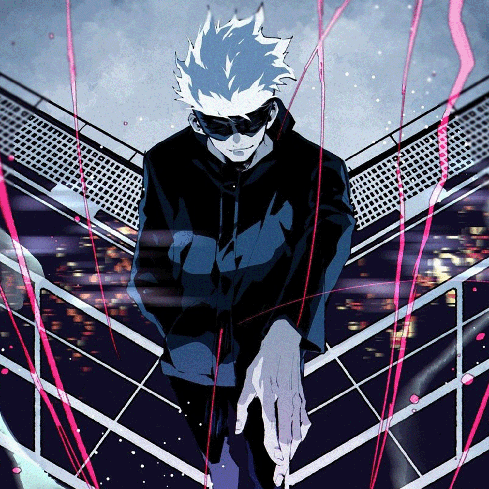
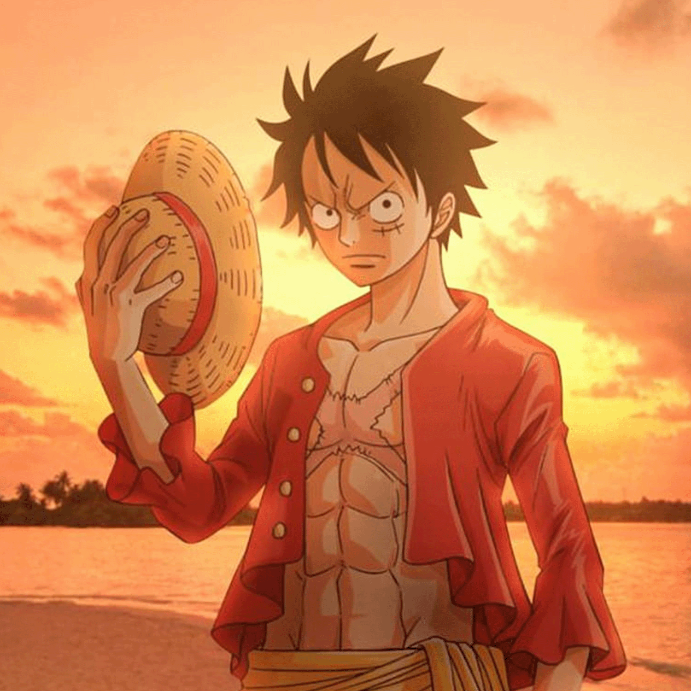
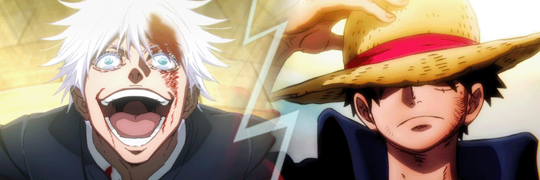
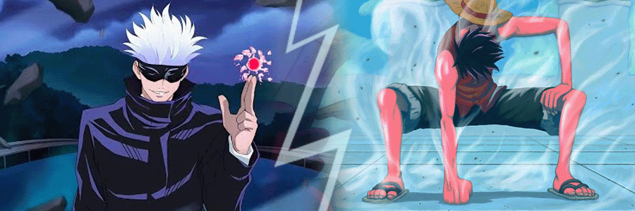
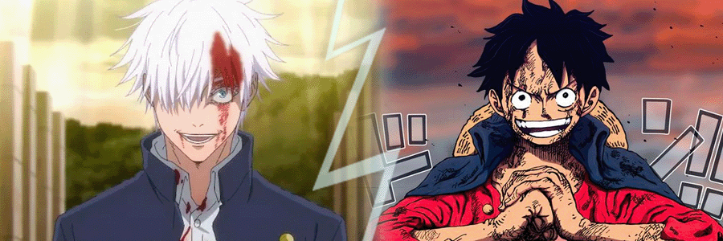

Gohetia / Menezes - Midterm Assignment
Project Description
This project will show you an epic character showdown, where Sheldon
and Henrique will engage in an intense debate regarding their favorite
anime characters, discussing who is the strongest and most powerful.
We will talk about our favorite characters backgrounds, worlds,
strenghts, weaknesses and, most important of all:
fighting skills!
Like a mixed martial art bout, we will go through 3 rounds. Each round
will display and test the chosen characters abilities: speed, strength
and fight IQ. The character who has most rounds will win the decision
at the end!
Let's start introducing our anime heroes:
Character Slideshow
1 / 2

Satoru Gojo
2 / 2

Monkey D. Luffy
❮
❯
Characters
1. Satoru Gojo
from the anime Jujutsu Kaisen

chosen by Sheldon Gohetia
Introducing first, fighting out of the blue corner, emerging from a hidden world of sorcery,
the insanely powerful and skilled: Satoru Gojo! He serves as a teacher at Tokyo Metropolitan Curse
Technical College, and possesses insanely strong magic.
As a professor, Gojo trains his students to become Jujutsu sorcerers, capable of combating curses and supernatural
entities, that threatens the balance between worlds. His awkward teaching style, combined with his set of skills,
makes him a strong and feared figure in his universe. [Sheldon]
2. Monkey D. Luffy
from the anime One Piece

chosen by Henrique Gamborgi Menezes
And now, fighting out of the red corner, coming from the vast seas
and fresh from a legendary quest for the One Piece, we have the
rubber and fearless pirate: Monkey D. Luffy! While a kid, Luffy ate
a miracle devil fruit who gave him a rubber body and uncountable
strength. He possesses several remarkable abilities that make him a
force to be reckoned with.
Obviously being made of rubber gives Luffy some special skills, such
as dodging objects and attacks, moving extremely fast, turning his
limbs giants and more. Luffy's resilience allow him to endure
physical pain and injuries. This mental ability is a key aspect of
his character, making him push beyond his limits in every bad
situation.
Of course, we can't forget to mention his biggest and probably only
weakness: he can't go underwater. The fruit he ate gives him his
power, but makes impossible for him to swim. [Henrique]
Round 1:Speed and Agility

Gojo is stronger than Luffy. Aside from the skill to swim in
any kind of water, he also has exceptional combat abilities, he has
mastered the so called "Infinity" technique, which grants him near
invulnerability and incredible speed. [Sheldon]
Luffy has powers that go way beyond than being made out of
rubber — you wouldn't believe how much you can do with that! During
his journey, he has developed incredible velocity, enough to make him
look like a blur on the battlefield. Not only incredible speed,
achieved by the "Observation Haki" technique, he can perceive any
movement of his opponent or incoming attacks, making Luffy near
untouchable. [Henrique]
Gojo is pretty fast. But Luffy's Haki gives him the upper hand on
this round.
Round 2:Strength

Luffy's strength is no joke, especially when he unleashes his
Gear Third, transforming his arms and legs into gigantic, inflated
weapons. His conquests against monsters and pirates on his world are
impressive. However, he's not fighting anyone of his world.
[Henrique]
Gojo, on the other side, holds the power of cursed energy,
capable of creating destructive magic fields and using techniques that
can disintegrate his enemies. In addition, Gojo possesses a unique
ability called the "Six Eyes" that grants him enhanced perception and
the ability to see the flow of Cursed Energy in greater detail,
making him untouchable. No matter how strong the opponent is, if it
can't land a single blow on him, it's useless. [Sheldon]
In this battle of strength, Gojo's cursed energy and
his Six Eyes technique tips the scales in his favor.
Round 3:Fight IQ

Luffy is not really known for his inteligence. However, he is a
very creative and unpredictable opponent. He is always finding new
ways to use his powers, adapting and learning a lot from every fight,
to counter his enemies.
[Henrique]
Gojo, as a paragon of intellectual powers, a strategic virtuoso
whose mental acuity transcends conventional boundaries. His mind, akin
to a labyrinthine fortress, effortlessly navigates the complexities of
jujutsu techniques and tactics. Gifted with a prodigious understanding
of Cursed Energy and its intricate nuances, Gojo's brilliance
illuminates the darkest corners of mystic combat, gives him advantage
in the fight IQ and inteligence area. [Sheldon]
Gojo's inteligence is definitely one of his main weapons. Once
again, he comes up on top.